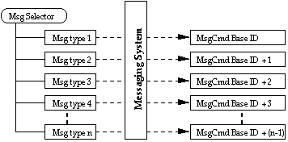
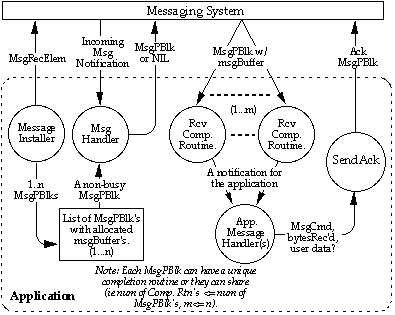

|
|
This Technote describes the Messaging System Architecture used in
Apple's PC Compatibility and DOS Compatibility products.
Specifically, the messaging system allows communication of data
between the PC-based machine running on a NuBus or PCI card and the
Macintosh OS. This inter-machine communication is facilitated through
a driver on the Macintosh which controls the PC card and allows it to
run within the Macintosh hardware and software space.
This Technote is directed toward third-party developers who are
interested in developing software for the Mac and the PC which needs
to communicate instructions or data between platforms. The
applications developed to use the messaging system would be intended
to run specifically with Apple's PC Compatibility products.
This document assumes the developer is familiar with application
and driver-level software development on the Macintosh platform as
well as the PC. For the Mac, an understanding of the Device Manager
and implementing 68K and PPC native code is essential. For the PC, an
understanding of 16-bit DOS Real mode execution and x86 assembly
language is useful. For development in conjunction with Window's
based applications, a knowledge of 32-bit Windows programming and
virtual device drivers (VxD's) is necessary.
This document also assumes the reader is familiar with Apple's PC
Compatibility products and how they function within the Macintosh OS.
Further information on Macintosh programming at the device level
can be found in Inside Macintosh: Devices . For more
information on Windows VxD programming (only necessary for using the
message system with Windows 3.x or Windows 95), see Writing
Windows Virtual Device Drivers by David Thielen and Bryan
Woodruff.
Updated: [Oct 01 1996]
|
About the PC Compatibility Messaging System
The PC Compatibility (or DOS Compatibility) systems currently
supported by this messaging architecture are the Centris 610 DOS
Compatible, PowerMac 6100/66 DOS Compatible, the Quadra 630 DOS
Compatible, and any PCI-based Macintosh which includes the most
recent PCI-based 100Mhz Pentium and Cyrix 5x86 PC Compatibility
Cards. Currently, the only system bundled with the PCI- based cards
is the PowerMac 7200/120. All of these systems must be running
version 1.5 of the PC Compatibility Software or later, which includes
the driver that allows the messaging system to function.
The messaging system is implemented as a 16-bit DOS real-mode
driver and is used extensively in these current products to allow the
PC to have access to the shared devices on the Mac (HD, CD, floppy,
etc.), networking communications, folder sharing, and clipboard
support.
Back to top
Using the Messaging System
Software programs on the Mac and the PC are capable of exchanging
messages containing up to 64K of data by using the Messaging System
API. Applications that plan on sharing messages must define and
understand the types of messages to be sent and received. More
importantly, verification and acknowledgment of sent and received
messages must be maintained by the sending and receiving
applications.
The driver installed at the Mac OS startup time is called
".Symbiosis" and needs to be opened by your Macintosh application
before driver calls can be made. Your program will then use device
manager _Control calls to register, send, and receive messages. The
PC accesses the messaging system through a software interrupt
interface. The application will load x86 registers with appropriate
values, a function selector, and then call the messaging system via
an INT 5Fh call.
Basic Messaging Concepts
Both the Mac and the PC applications accessing the messaging
systems must define a 32-bit selector for their messages and a count
value that denotes the number of different types of messages
available for this selector. Typically, applications that are to pass
messages define one selector type. Selector types can be any unique
32-bit value, so 4-character values work well (32-bit OSType). Both
the Mac and the PC applications must know the message selector and
they must know the number of message types associated with that
selector in order to register themselves with the messaging system
(See the Registering Messages section for more details
on Message Selectors and Types).
The basic process of single message communication between
an application on the Mac and an application on the PC is as follows:
- Open the messaging system and verify it is available.
- Accurately register message selector and number of message
types.
- Install message handlers and completion routines.
- Begin transceiving messages.
- Once the message handler is called, the application can
provide space to receive the data or ignore the message.
- After the data has been received, the receiving application
should send a response to the sending application, acknowledging
the data was properly received.
- Once the acknowledge has been received, the calling
application can then send another message (goto step 4) or both
apps can stop sending messages.
- After all messages have been sent, both applications must
remove and deallocate all their message handlers.
Performing multiple message communication is also possible
(i.e., the ability to send more than one message before receiving an
acknowledge), but requires more maintenance. The intent here is to
describe the basic communication between applications. Therefore,
multiple message communication concepts are discussed in the
Advanced Messaging Techniques section of this Technote.
Opening the Messaging System
On the Mac, the application must open the .Symbiosis driver and
retrieve the refNum for the driver in order to make other message
system control calls. Your application can do this using the
OpenDriver function. If this returns an error, the .Symbiosis driver
is not available and the messaging system cannot be used.
On the PC, the application must load the AH register with 0 and
call the software interrupt INT 5Fh. If the messaging system is
installed, AH = $A5 and AL will equal the highest implemented
function code, which is currently 5, when the interrupt returns. The
highest implemented function code means there are a total of 5
functions supported for registering and receiving messages. This will
be discussed in detail later.
Essential Data Types
The basic data structures for accessing the messaging system on
the Mac side are defined as follows:
typedef struct {
QElemPtr qLink;
SInt16 qType;
SInt16 ioTrap;
Ptr ioCmdAddr;
ProcPtr ioCompletion; // always NULL
OSErr ioResult; // error result info.
StringPtr ioNamePtr;
SInt16 ioVRefNum;
SInt16 ioCRefNum; // refNum of Symbiosis driver.
SInt16 csCode; // messaging system function
void * csPtr; // pointer to procedure or data
SInt32 csData; // data
SInt32 csData2; // data
}SBParamBlockRec, *SBParamBlockRecPtr;
|
The SBParamBlockRec is virtually the same as a standard
paramBlockRec except only the fields used by the messaging system are
included for the data area. The only fields needed for messaging are
the ioCRefNum and csCode for calling the driver, and then the csPtr
and csData fields which are used to point to other structures that
are defined below. The different csCode's used for calling the
messaging system are defined below:
enum {
eSendMessage = 800, // Send a message
eInstallMsgHandler = 801, // Install a message handler
eRemoveMsgHandler = 802, // Remove message handler
eRegisterMessage = 803 // Register message type
};
|
The data structures used for sending and receiving messages are
below:
typedef struct MsgPBlk {
struct MsgPBlk* msgQLink; // Pointer to next MsgPBlk
SInt16 msgQType; // Queue Flags
SInt16 msgCmd; // The message type or command
SInt32 msgParam1; // Message parameter 1
SInt32 msgParam2; // Message parameter 2
void* msgBuffer; // Ptr to the msg data buffer
SInt32 msgReqCount; // Requested data length
SInt32 msgActCount; // Actual data length
MsgCompletionUPP msgCompletion; // Ptr to comp. rtn. or NULL
SInt16 msgResult; // The result of msg operation
UInt16 msgFlags; // Message flags
UInt32 msgUserData; // refCon (a5, etc)
}MsgPBlk, *MsgPBlkPtr;
typedef struct MsgRecElem {
struct MsgRecElem* recQLink; // Next queue element
SInt16 recQType; // queue flags
SInt16 recFlags; // Not used...Set to zero
MsgReceiveUPP recProc; // Ptr to the receive proc.
SInt16 recCmdBase; // Msg Selector base.
SInt16 recCmdCount; // # of msgTypes
UInt32 recUserData; // refCon (could be A5...)
}MsgRecElem, *MsgRecElemPtr;
|
The MsgPBlk is used for sending and receiving data and the
MsgRecElem is used for notification of incoming messages.
For the PC application using the messaging system, the PC Data
structures and function ID constants are defined below:
enum {
eIsAvailable = 0 // Index for is available
eSendMessage = 1 // Index for Send func
eInstallMsgHandler = 2 // Index for Install Msg Handler func
eRemoveMsgHandler = 3 // Index for Remove Msg Handler func
eRegisterMessage = 4 // Index for Register Msg
eVersionCheck = 5 // Index to get the version numbers
};
// some basic types used for the MsgPBlk and MsgRecElem structures.
typedef char SInt8;
typedef short SInt16;
typedef long SInt32;
typedef unsigned char UInt8;
typedef unsigned short UInt16;
typedef unsigned long UInt32;
typedef char __far* Ptr32;
typedef struct MsgPBlk {
struct MsgPBlk* link; // Pointer to the next MsgPBlk.
SInt16 msgCmd; // The message command or type
SInt32 msgParam1; // Param 1
SInt32 msgParam2; // Param 2
UInt32 msgCompletion; // Ptr to the completion routine
Ptr32 msgBuffer; // Ptr to the data buffer
SInt32 msgReqCount; // Length of the data
SInt32 msgActCount; // # of bytes actually transfered
SInt8 msgResult; // The err code after complete or 1
UInt8 msgFlags; // Not used, init to zero.
UInt32 msgUserData; // for caller's use
UInt32 msgVXD; // Used by VxD
}MsgPBlk, *MsgPBlkPtr;
typedef struct MsgRecElem {
struct MsgRecElem* Link;
SInt32 Code;
SInt16 cmdBase; // the base message number for this proc
SInt16 cmdCount;// the # of message numbers for this proc
UInt32 userData;// for caller's use
UInt32 recVXD; // reserved - Used by VxD
}MsgRecElem, *MsgRecElemPtr;
|
Registering Messages with the Message System
The process of message registration requires both the Mac
application and the PC application to be aware of a predefined set of
message types that are defined by the application developer. Both
applications are aware of the data formats of these messages and know
how to decode and use certain parts of the messages based on their
distinct message type ID. These message types are grouped together by
a message selector (4-byte value of type OSType) known to both the
Mac and the PC application.
Both applications send the message selector and the number of
message types to the message system and the message system returns a
cmdBaseID (See Figure 1).

Figure 1. Registering a message selector and message types.
Once the set of messages for the Mac and PC applications has been
registered with the message system, each individual message has a
unique value (called a msgCmd) which ranges from the msgCmdBaseID to
the total number of messages - 1. When the applications send and
receive messages, they will reference particular message types
through the msgCmdBaseID plus some value which specifies the message
type. The resulting value is the msgCmd.
Registering a Message on the Mac
To register messages on the Mac, your application must fill out a
SBParamBlockRec make the appropriate driver call. To do this, fill
out the following fields of a SBParamBlockRec:
--> ioCRefNum = <refNum of the .Symbiosis driver>;
--> ioVRefNum = 0;
--> ioCompletion = 0;
<-- ioResult = 0;
--> csCode = eRegisterMessage;
<-> csPtr = <message selector>;
--> csData = <number of message types>;
|
The message selector entered in the csPtr field should by a 4-byte
value of type OSType. The csData field should be the number of
message types registered.
Make the driver call using the PBControlImmed function. If the
registration is successful, the ioResult will equal noErr and the
csPtr will contain a message base command (msgCmdBaseID) value which
is used in the message send and receive parameter blocks.
Registering a Message on the PC
To register a message on the PC, load the 32-bit message selector
into the EBX register and put the number of message types in CX. Then
call INT 5Fh with AH equal to the registerMessage function ID (4). On
return from the interrupt, BX will contain a message command base ID
which must be used in the MsgPBlk's and MsgRecElem's. A sample
function called MsgRegister, which passes in a selector and count
(number of msg types) and returns the command base ID, is shown
below:
MsgRegister PROC FAR C msgSel: DWORD, msgCount: WORD, msgCmmd: WORD
mov ebx,msgSel ; load EBX with the msgSelector.
mov cx,msgCount ; load CX with the msgCount
mov ah,registerMessage ; load AH with the function ID.
int 05Fh ; make the interrupt call.
mov dx,bx ; move BX to DX.
mov bx,msgCmmd ; Put the address of msgCmd in BX.
mov [bx],dx ; Return the msgCmd value.
ret
MsgRegister ENDP
|
Sending a Message from the Mac
For either machine to send a message to the other, a MsgPBlk must
be filled out and passed to the message system. The message system
function for sending messages is always executed
asynchronously, but the actual driver call is still made with
PBControlImmed function and the ioCompletion field of the
SBParamBlockRec should be set to NULL. The SBParamBlockRec is only
used to send the MsgPBlk to the messaging system, so the completion
routine function pointer is filled in the ioCompletion field of the
MsgPBlk. The csPtr field on the SBParamBlockRec should be a ptr to
the completed MsgPBlk.
To send a message, your application should fill out the MsgPBlk as
follows:
--> msgCmd = <message cmdBase ID + type ID>;
--> msgParam1 = <any 32-bit value>;
--> msgParam2 = <any 32-bit value>;
--> msgBuffer = <pointer to a data buffer (64K max)>;
--> msgReqCount = <size (in bytes) of the data buffer)>;
<-- msgActCount = 0; // init to zero!
--> msgCompletion = <pointer to completion rtn. or NULL>;
<-- msgResult = 0; // init to zero.
--> msgFlags = 0; // always set to zero!
--> msgUserData = <any 32-bit pointer of value>;
|
The msgCmd field should contain a value equal to the message
cmdBase ID returned from the message registration function plus the
message type value for this message. If your application registered
15 message types for a particular selector (for which a cmdBase ID
was returned), cmdBaseID <= msgCmd < (cmdBaseID + number of
message types). The message handler on the PC will receive the msgCmd
and can determine the message type ID by subtracting the cmdBaseID
from the msgCmd. The format and/or types of these messages are
predefined and recognizable by the applications which defined them.
The msgParam1 and msgParam2 fields can contain any 32-bit values
the sending application wishes to place in them. The receiving
function on the PC will have access to these paramters before the
msgBuffer is actually transferred to the PC. So these fields can be
used for messages without a data block or they can be used to
determine if the receiving application wants to receive the data
buffer.
The MsgReqCount field should contain the length (in bytes) of the
data that is contained within the msgBuffer block. This does not mean
it should be the length of the msgBuffer block, only the length of
the data you wish to send that is contained from the start of the
msgBuffer (e.g., msgReqCount <= size of buffer). The msgActCount
field is filled in by the message system contains the number of bytes
that were actually sent to the PC.
The msgUserData is a refCon that can be a 32-bit value or a
pointer to data. This field does not get transferred to the PC, but
it available for use when the completion routine gets called.
Once the message is sent, the msgResult field will be set to 1 to
mark that the message is currently busy. Once the completion routine
is called, msgResult will be 0 (noErr) or -3 (msgTimeout).
|
Note:
The completion routine gets called at Deferred Task
time and can use registers D0-D2, A0, and A1. All other registers
must be saved and restored. A0 will contain a pointer to the MsgPBlk.
A5 must be restored and saved if access to globals are necessary and
you are coding under 68K. Use the msgUserData field hold onto your A5
world.
|
If your application is PPC Native, universal proc pointers and
mixed-mode function definitions have been provided in the Messaging.h
file included in the MessageTest tool source code that accompanies
this Technote. Obviously, no save and restore of global space is
necessary when running from PPC Native code.
Sending a Message from the PC
The MsgPBlk on the Mac and the MsgPBlk on the PC are virtually
identical as far as the fields of the data structure the messaging
application must use. The PC application should build the MsgPBlk in
the same manner as described in the previous section and then send it
through the message system interface on the PC.
To send a message from the PC, ES: BX should contain a far pointer
to the MsgPBlk. AH should contain the function ID for sendMessage
(1). Then the application should make the INT 5Fh call. The message
will be queued and the msgResult field will be set to 1. Once the
message has been sent, the completion routine will be called.
Your completion routine can be done in C code as well as assembly,
but you must remember to use the __loadds keyword in your function
prototype in order to have access to globals within your functions
data segment.
|
Note:
The completion routine specified will be called with
a far call, so your completion routine must return with a RETF
instruction (if you are writing your completion routine in C, this is
usually not an issue). Interrupts are also turned off when the
completion routine is called and the function should not turn
interrupts on for any reason. The completion routine can use the AX,
BX, CX, DX, DI, SI, ES, and DS registers. When the completion routine
is called ES: BX contains a pointer to the MsgPBlk.
|
See the Test.c and Mesg.asm files for the PC MsgTest tool that
accompanies this Technote for sample code.
Receiving a Message
To receive a message, your application must install a message
handler function. A message handler function must be unique to every
message selector that has been registered with the messaging system,
but is the same function for every message type that belongs to a
particular selector. In other words, if your application registers a
message selector 'abcd' which has 15 message types associated with
it, your application only has to install one message handler that
will know how to process all 15 types of messages. The receive
function can determine the message type by subtracting the cmdBaseID
from the msgCmd value in the MsgRecElem.
The purpose of a message handler is to examine the msgCmd,
msgParam1 and msgParam2 fields of the message that has been sent to
determine if there is any data to be retrieved from the message. If
there is data the receiving application wants to get, it must provide
a pointer to a MsgPBlk with space allocated for the msgBuffer field
for receiving the data. The msgReqCount field of the MsgPBlk should
also contain the number of bytes the application expects to receive
or the absolute size in bytes of the msgBuffer (i.e., 0 <
msgReqCount <= size of msgBuffer). The messaging system will only
write a maximum of msgReqCount bytes or less of data to the msgBuffer
block.
Once a MsgPBlk has been provided, the messaging system will then
retrieve the data into the msgBuffer field and update the msgActCount
field of the MsgPBlk with the actual number of bytes transferred. If
msgReqCount == msgActCount, msgResult equals noErr (0). If
msgReqCount < msgActCount, msgResult will equal -1 (msgOverrun).
If msgReqCount > msgActCount, msgResult will equal -2
(msgUnderrun). If msgResult equals -3 (msgTimeout), a time out error
occurred and the transferal of data may not be complete. After the
data has been received, the completion routine specified in the
MsgPBlk will be called.
|
Note:
The msgBuffer pointer will be advanced msgActCount
bytes after the data transfer has been made (i.e., the pointer will
point the end of the msgBuffer) and needs to be reset back to the
start of the buffer after the completion routine is called in order
to access the transfered data. This behavior is consistent for the
Mac and the PC.
|
Receiving a Message on the Mac
To establish the ability for the Mac application to receive
messages, the MsgRecElem should be built and installed. Typically,
this should be done before the application sends a message so it is
able to receive an acknowledge from the receiving application. Build
a MsgRecElem as follows:
--> recFlags = 0; // not used, init to zero.
--> recProc = <pointer to msg receive handler function>;
--> recCmdBase = <cmdBaseID for this app's msg Selector>;
--> recCmdCount = <Number of msgTypes for this msg selector>;
--> recUserData = <any 32-bit value or pointer>;
|
To install the msg receive handler, build the MsgRecElem and then
build an SBParamBlcokRec as follows:
--> ioCRefNum = <refNum of the .Symbiosis driver>;
--> ioVRefNum = 0;
--> ioCompletion = 0;
<-- ioResult = 0;
--> csCode = eInstallMsgHandler ;
--> csPtr = <pointer to MsgRecElem>;
--> csData = 0;
--> csData2 = 0;
|
Then install the msg handler by passing the built SBParamBlock to
PBControlImmed.
When the Mac receives a message from the PC, the message handler
function pointed to by recProc in the MsgRecElem will be called. Your
handler is called at interrupt time with interrupts masked at the
slot interrupt level. When the handler is called, D0.w contains the
msgCmd, D1 contains msgParam1, and D2 contains msgParam2 from the
sending applications MsgPBlk.
Based on these three values passed to the message handler, it must
determine whether there is data to be received or whether it wants to
receive the data. If the handler decides to receive the message data,
it must return a pointer to a MsgPBlk that has an allocated msgBuffer
and where the msgReqCount field is set to the number of bytes it
expects to or is able to receive (see the previous section). The
MsgPBlk should be returned in A0. If the MsgHandler decides not to
receive the data, it should return 0 in A0.
The completion routine specified in the MsgPBlk will be called
after the data has finished transmitting through the message system.
The completion routine is called at deferred task time and can use
registers A0, A1, D0, D1, and D2. All other registers must be saved
and restored. A0 will contain a pointer to the MsgPBlk. (The
universal procedure prototypes automatically handle moving the
MsgPBlk into the function for PPC Native C functions.)
Receiving a Message on the PC
The process for receiving a message on the PC is much the same as
on the Mac. Build a MsgRecElem just as was shown in the previous
section. To install the message handler, place a pointer to
MsgRecElem in ES: BX, set AH to installMsgHandler (2) and call INT
5Fh.
The installed message handler routine is called at interrupt time
with interrupts turned off. The AX, BX, CX, DX, SI, DI, ES, and DS
registers are available for use. When it is called, AX contains the
msgCmd from the sending application's MsgPBlk. ECX contains msgParam1
and EDX contains msgParam2 from the sending application's MsgPBlk.
DS: DI contains a pointer to the MsgRecElem.
Just the same as in the Mac message handler, the PC message
handler must determine whether there is data to be received or
whether it wants to receive the data in the message. If it does, it
must return a pointer to a MsgPBlk in ES: BX, otherwise it should set
ES: BX to NULL.
After the data has been received by the PC, the completion routine
specified in the MsgPBlk will be called. ES: BX will contain the
pointer the MsgPBlk and the function can use the AX, BX, CX, DX, DI,
SI, ES, and DS registers. All other registers must be saved and
restored.
|
Note:
Both the message handling routine and the completion
routine are called at interrupt time with interrupts turned off. Both
functions should adhere to any rules of execution during interrupt
time for a PC system and should not at any time turn
interrupts back on.
|
Removing the Message Handlers
Message handlers must be removed when applications that installed
them are no longer active. If the message handler is not removed, the
messaging system could attempt to call the handler again. If the
application has been terminated, it's a good bet that both the PC and
Mac will crash.
To remove a message handler on the Mac, create a SBParamBlockRec
and specify the eRemoveMsgHandler function code for the csCode. The
csPtr field would be a pointer to the MsgRecElem that was used to
install the message handler. Pass the SBParamBlockRec to the
messaging system using a PBControl call.
To remove a message handler on the PC, set the AH register to
removeMsgHandler (3), set ES: BX to a pointer to the MsgRecElem used
to install the handler, and make an INT 5Fh call.
Advanced Messaging System Techniques
As described in the Basic Messaging Concepts section
of this Technote, the goal here is introduce developers to simple
methods of performing Mac <--> PC communication using the PC
Compatibility Card's messaging system interface. That basic level of
communications means two applications send information to each one
message at a time (i.e., the sending application does not send a
second message to a receiving application until the receiving
application has acknowledged it actually received the data of the
sent message). Some applications may have a need to send multiple
threads of messages back and forth before awaiting a reply, however.
The good news is that this can be done. The bad news is that the
developer is responsible for managing all of the message types and
basic send/acknowledge protocols the applications should adhere to.
This management of messages is primarily performed in the message
handler function which would be required to maintain a list of
MsgPBlk's to grab all of the data being sent in. The only limit being
how much memory the application can allocate to hold on to this
incoming data and how well the message parameters and data are
defined so acknowledging messages can be adequately returned to the
sending application.

Figure 2. Basic data flow for multiple message
communication.
As shown in Figure 2, a message installer can install a MsgRecElem
and some number of n MsgPBlk's with msgBuffer's allocated. When the
MsgHandler is called, it searches the list for an available MsgPBlk
(one in which the msgResult field <= 0, and the msgActCount = 0,
so it knows the msgBuffer is empty) and returns it to the messaging
system. Each MsgPBlk may have its own completion routine (if, for
instance, one type of MsgPBlk was to be used for a specific message
type) or can use one particular completion routine. So the number of
completion routines <= the number of MsgPBlk's in the list.
After a MsgPBlk's completion routine is called, it can handle the
data in any method needed, but then needs to notify the application
that the data is ready. Either the msgBuffer needs to be detached
from the MsgPBlk (and a new buffer attached) or the application must
have some way of marking the MsgPBlk as busy until the application
can retrieve and process the data. The MsgPBlk can then be reset and
the MsgHandler can use it again for other incoming messages.
The application message handler is then responsible for sending
the acknowledge message back to the sending application after it has
verified the length and/or quality of the data.
What is described here is one possible methodology for handling
multiple message communication. Simpler methods or more complex
methods may be needed based on the complexity of data to be
exchanged. The level of this complexity is left to the developer,
however. As long as the basic criteria are met as to when the
messaging system has access to the paramBlock's and when the
application has access to them, any system should work.
Similar messaging algorithms should be maintained for both the Mac
and the PC applications that communicate information. All
transactions between the Mac and the PC are made asynchronously at
interrupt time.
Limitations
As stated earlier, the messaging system is capable of sending
individual data packets of up to 64K. All data transfers between the
Mac and the PC occur at interrupt time. This can sometimes have an
effect on other software that may rely on processing data during
interrupt time. Therefore, it is highly recommended that if software
designed to use this messaging system requires transmission of large
blocks of data, the packet size used for each message sent should be
reduced.
There is no absolute rule to follow here and the effect on other
interrupt dependent software running at the same time as the data
packets being transmitted to and from the PC Compatibility Card also
depends on the capability of the hardware being used. As a general
rule, however, it is advised that if the software being developed
needs to transmit more than 1 MB of data at any particular time, the
message packet size should be reduced to 32K or 16K. This will allow
interrupts to not be turned off for as long a period of time to
process the data transfers and allow other interrupts to execute and
catch up.
Back to top
Summary of the Messaging System
Note: All of the Macintosh constants, data types, universal
procedure pointers, and universal procedure definitions can be found
in the "Messaging.h" file in MacMsgTest tool that accompanies this
technote.
Constants (Mac)
#define kDriverName "\p.Symbiosis" // The name of the driver
enum {
eSendMessage = 800, // Send a message
eInstallMsgHandler = 801, // Install a message handler
eRemoveMsgHandler = 802, // Remove message handler
eRegisterMessage = 803 // Register message type
};
enum {
msgNoError = 0, // No error
msgOverrun = -1, // More data was available
msgUnderrun = -2, // Less data was available
msgTimeout = -3 // Timeout error
};
Data Types (Mac)
typedef struct {
QElemPtr qLink;
SInt16 qType;
SInt16 ioTrap;
Ptr ioCmdAddr;
ProcPtr ioCompletion; // always NULL
OSErr ioResult; // error result info.
StringPtr ioNamePtr;
SInt16 ioVRefNum;
SInt16 ioCRefNum; // refNum of Symbiosis driver.
SInt16 csCode; // messaging system function
void * csPtr; // pointer to procedure or data
SInt32 csData; // data
SInt32 csData2; // data
}SBParamBlockRec, *SBParamBlockRecPtr;
typedef struct MsgPBlk {
struct MsgPBlk* msgQLink; // Pointer to next MsgPBlk
SInt16 msgQType; // Queue Flags
SInt16 msgCmd; // The message type or command
SInt32 msgParam1; // Message parameter 1
SInt32 msgParam2; // Message parameter 2
void* msgBuffer; // Ptr to the msg data buffer
SInt32 msgReqCount; // Requested data length
SInt32 msgActCount; // Actual data length
MsgCompletionUPP msgCompletion; // Ptr to comp. rtn. or NULL
SInt16 msgResult; // The result of msg operation
UInt16 msgFlags; // Message flags
UInt32 msgUserData; // refCon (a5, etc)
}MsgPBlk, *MsgPBlkPtr;
typedef struct MsgRecElem {
struct MsgRecElem* recQLink; // Next queue element
SInt16 recQType; // queue flags
SInt16 recFlags; // Not used...Set to zero
MsgReceiveUPP recProc; // Ptr to the receive proc.
SInt16 recCmdBase; // Msg Selector base.
SInt16 recCmdCount; // # of msgTypes
UInt32 recUserData; // refCon (could be A5...)
}MsgRecElem, *MsgRecElemPtr;
|
Universal ProcPtr and Procedure Definitions
#if GENERATINGCFM
typedef UniversalProcPtr MsgCompletionUPP;
typedef UniversalProcPtr MsgReceiveUPP;
#else
typedef ProcPtr MsgCompletionUPP;
typedef ProcPtr MsgReceiveUPP;
#endif
enum {
uppMsgReceiveProcInfo = kRegisterBased
| REGISTER_ROUTINE_PARAMETER(1, kRegisterA1,
SIZE_CODE(sizeof(MsgRecElemPtr)))
| REGISTER_ROUTINE_PARAMETER(2, kRegisterD0, SIZE_CODE(sizeof(short)))
| REGISTER_ROUTINE_PARAMETER(3, kRegisterD1, SIZE_CODE(sizeof(long)))
| REGISTER_ROUTINE_PARAMETER(4, kRegisterD2, SIZE_CODE(sizeof(long)))
| REGISTER_RESULT_LOCATION(kRegisterA0)
| RESULT_SIZE(kFourByteCode),
uppMsgCompletionProcInfo = kRegisterBased
| REGISTER_ROUTINE_PARAMETER(1, kRegisterA0,
SIZE_CODE(sizeof(MsgPBlkPtr)))
| REGISTER_RESULT_LOCATION(kRegisterA0)
| RESULT_SIZE(kFourByteCode)
};
#if GENERATINGCFM
#define NewMsgReceiveProc(userRoutine) \
(MsgReceiveUPP) NewRoutineDescriptor((ProcPtr)(userRoutine), \
uppMsgReceiveProcInfo, \
GetCurrentArchitecture())
#else
#define NewMsgReceiveProc(userRoutine) \
((MsgReceiveUPP) (userRoutine))
#endif
#if GENERATINGCFM
#define NewMsgCompletionProc(userRoutine) \
(MsgCompletionUPP) NewRoutineDescriptor((ProcPtr)(userRoutine), \
uppMsgCompletionProcInfo, \
GetCurrentArchitecture())
#else
#define NewMsgCompletionProc(userRoutine) \
((MsgCompletionUPP) (userRoutine))
#endif
|
|
Note:
All of the PC constants and data types for assembly
language programming can be found in the "PCMesg.inc" file that is
part of the PCMsgTst tool that accompanies this Technote. Constants
and data types for C programming can be found in the PCMesg.h file
that is included.
|
Constants (PC)
enum {
eIsAvailable = 0 // Index for is available
eSendMessage = 1 // Index for Send func
eInstallMsgHandler = 2 // Index for Install Msg Handler func
eRemoveMsgHandler = 3 // Index for Remove Msg Handler func
eRegisterMessage = 4 // Index for Register Msg
eVersionCheck = 5 // Index to get the version numbers
};
|
Data Types (PC)
// some basic types used for the MsgPBlk and MsgRecElem structures.
typedef char SInt8;
typedef short SInt16;
typedef long SInt32;
typedef unsigned char UInt8;
typedef unsigned short UInt16;
typedef unsigned long UInt32;
typedef char __far* Ptr32;
typedef struct MsgPBlk {
struct MsgPBlk* link; // Pointer to the next MsgPBlk.
SInt16 msgCmd; // The message command or type
SInt32 msgParam1; // Param 1
SInt32 msgParam2; // Param 2
UInt32 msgCompletion; // Ptr to the completion routine
Ptr32 msgBuffer; // Ptr to the data buffer
SInt32 msgReqCount; // Length of the data
SInt32 msgActCount; // # of bytes actually transfered
SInt8 msgResult; // The err code after complete or 1
UInt8 msgFlags; // Not used, init to zero.
UInt32 msgUserData; // for caller's use
UInt32 msgVXD; // Used by VxD
}MsgPBlk, *MsgPBlkPtr;
typedef struct MsgRecElem {
struct MsgRecElem* Link;
SInt32 Code;
SInt16 cmdBase; // the base message number for this proc
SInt16 cmdCount; // the # of message numbers for this proc
UInt32 userData; // for caller's use
UInt32 recVXD; // reserved - Used by VxD
}MsgRecElem, *MsgRecElemPtr;
|
Back to top
Summary
The Messaging System Architecture described in this Technote is
compatible with the PC Compatibility Software v1.5 or later, which is
installable on all DOS Compatible and PC Compatible products shipped
by Apple. This includes the Centris 610 DOS Compatible, the Quadra
630 DOS Compatible, the PowerMac 6100 DOS Compatible, the 7200 PC
Compatible, and all PCI based Macintoshes which support the 12" 100
MHz Pentium and 7" 100MHz Cyrix 5x86 PC Compatibility Cards.
Future releases of the PC Compatibility Software may have
modifications to Messaging System Architectures that will require
updates of the software Interface described in this Technote.
The MacMsgTest and PCMsgTst Tools
This Technote is accompanied by two tools, one for the Mac and one
for the PC, that perform very simple messaging. MacMsgTest is written
entirely in C and is designed and compiled to run PPC Native.
PCMsgTst is written in C and x86 assembly. Source code, header files,
and makefiles are included for each tool. The necessary build
environments are not included.
The tools are available on Apple's Developer web site
(http://www.developer.apple.com/)
and on the Developer CD. Please see each tool's individual ReadMe
files for further information on executing and building MacMsgTest
and PCMsgTst.
Back to top
Downloadables
Back to top
|